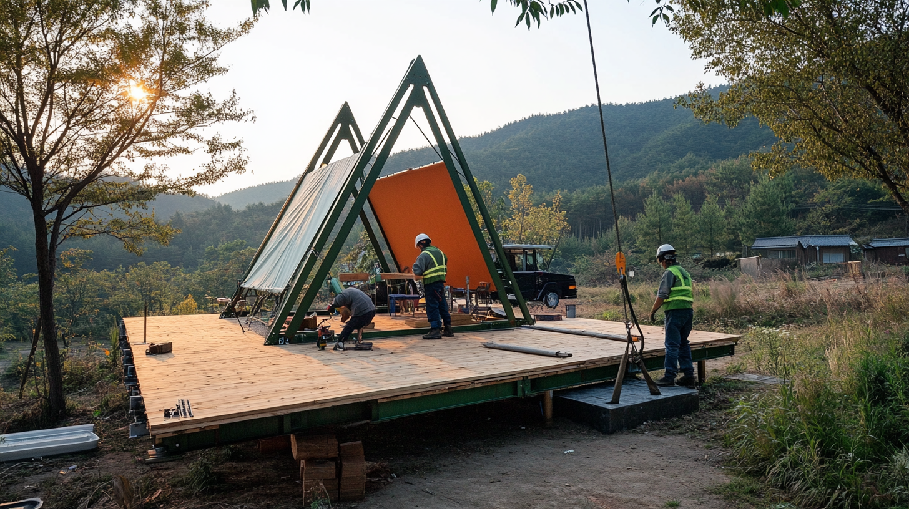

홈
›
WOCS소개
›
특허 기술
PATENTED TECHNOLOGY
무용접 다방향
유니버설 조인트
이중 쐐기 가압 방식의 독자적 잠금 구조.

HOW IT WORKS
이중 쐐기
원리
⚙️
중앙 구형 허브
다방향 커넥터로 어떤 각도에서든 파이프 연결.
🔧
커넥터 어셈블리
하우징 + 이중 쐐기 블록 + 가압 볼트 3중 구조.
🔒
독립적 잠금
각 연결점이 독립 작동. 부분 교체 용이.